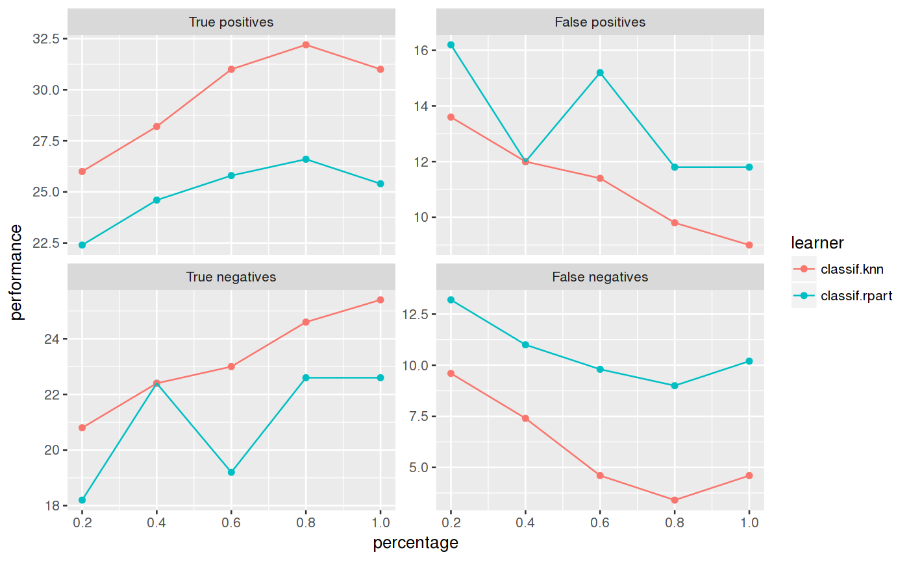

Observe how the performance changes with an increasing number of observations.
generateLearningCurveData(learners, task, resampling = NULL, percs = seq(0.1, 1, by = 0.1), measures, stratify = FALSE, show.info = getMlrOption("show.info"))
| learners | [(list of) |
|---|---|
| task | [ |
| resampling | [ |
| percs | [ |
| measures | [(list of) |
| stratify | [ |
| show.info | [ |
[LearningCurveData]. A list containing:
[Task]
The task.
[(list of) Measure]
Performance measures.
[data.frame] with columns:
learner Names of learners.
percentage Percentages drawn from the training split.
One column for each
Measure passed to generateLearningCurveData.
Other generate_plot_data: generateCalibrationData,
generateCritDifferencesData,
generateFeatureImportanceData,
generateFilterValuesData,
generateFunctionalANOVAData,
generatePartialDependenceData,
generateThreshVsPerfData,
getFilterValues,
plotFilterValues
Other learning_curve: plotLearningCurveGGVIS,
plotLearningCurve
r = generateLearningCurveData(list("classif.rpart", "classif.knn"), task = sonar.task, percs = seq(0.2, 1, by = 0.2), measures = list(tp, fp, tn, fn), resampling = makeResampleDesc(method = "Subsample", iters = 5), show.info = FALSE) plotLearningCurve(r)